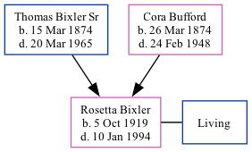

Rosetta Calvert (née Bixler) 1919 - 1994
[ Home ] | [ Calendar ] | [ Surnames Index ] | [ Family History ]The youngest of 12 children of Thomas Bixler Sr (a farmer) and Cora Bufford, Rosetta Bixler, the fourth cousin twice-removed on the mother's side of <a href="I1.html">Nigel Horne</a>, was born in Spencer, Owen, Indiana, USA on Oct 5, 1919<span class="citation">1,2,3,4,5</span>. She married Otis Calvert in Owen, Indiana, USA on Dec 24, 1935<span class="citation">6</span>. On Feb 9, 1920, she lived in Clay, Indiana<span class="citation">2</span>. <p>She died on Jan 10, 1994 in Greencastle, Putnam, Indiana<span class="citation">1,3,5</span> and was buried at Riverside Cemetery, Spencer, Indiana after Jan 10, 1994.
Parents
- Thomas Isaac was born on Mar 15, 1874
- Cora Pearl was born on Mar 26, 1874
Citations
- Social Security Death Index - Findmypast
- US Census 1920 - Findmypast (was age 0 and the daughter of the head of the household)
- United States Billion Graves index - Findmypast
- United States Marriages - Findmypast
- United States Obituary Notices - Findmypast
- United States Marriages - Findmypast
Media
US Census 1920 - USC/1920/004965836/00459/043
United States Marriages - R_75587487/2
United States Marriages - FS/MAR/34114183/2
Social Security Death Index - USBMD/SSDI/310489659
United States Obituary Notices - US/TRIB/035527508
United States Billion Graves index - US/BMD/BILLION/011338442
Family Tree
Generated by Ged2Site. Last updated on Jul 20, 2025